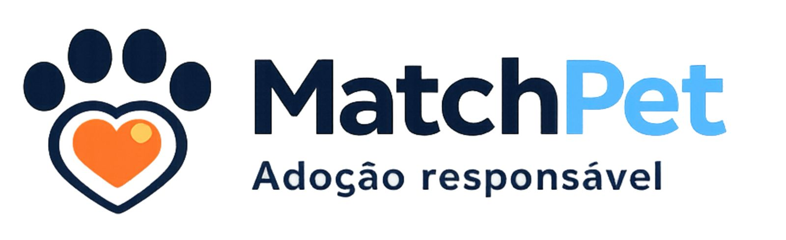

1. Explore os pets
Veja cães disponíveis com perfil completo, fotos e informações importantes.

A MatchPet conecta adotantes, ONGs e tutores responsáveis em um processo seguro, humano e consciente.
A MatchPet é uma plataforma dedicada à adoção responsável de cães, conectando animais que precisam de um lar a pessoas dispostas a oferecer cuidado, carinho e responsabilidade. Nosso objetivo é facilitar esse encontro de forma segura, consciente e acessível, promovendo o bem-estar animal e incentivando a adoção como um ato de amor. Trabalhamos como uma ponte entre adotantes, ONGs e tutores, garantindo que cada adoção seja feita com responsabilidade e respeito à vida do animal. Acreditamos que adotar vai muito além de levar um pet para casa — é assumir um compromisso para toda a vida.
A MatchPet não realiza entrega automática de animais. Toda solicitação passa por análise, contato com ONG ou tutor e avaliação do perfil do adotante.
Veja cães disponíveis com perfil completo, fotos e informações importantes.
Preencha seus dados, moradia e rotina para iniciar o processo.
Documentos e respostas ajudam a garantir uma adoção segura e consciente.
Conheça cada pet de verdade Descubra personalidade, rotina, necessidades e compatibilidade antes de tomar sua decisão.
Acompanhamento humano do início ao fim Fale diretamente com ONGs e tutores responsáveis e tenha suporte durante todo o processo.
Adoção com segurança e responsabilidade Cada solicitação é analisada para garantir que o pet vá para um lar preparado e amoroso.
Comece agora e encontre cães para adoção perto de você.